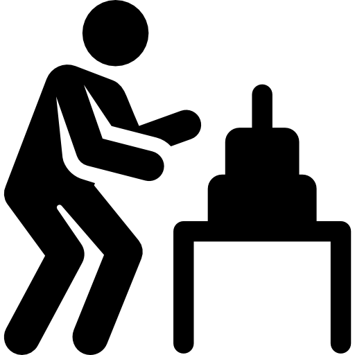
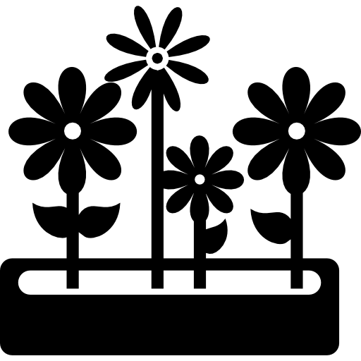

Dažas no īpašībām, kuras padara
Alisi Čurksti
par brīnišķīgāko cilvēku pasaulē.
-
Aizrautība
Apbrīnojama spēja koncentrēties un iedziļināties visdažādākajos notikumos, informācijā un pamanīt detaļas, kas citiem paslīd garām. Ar viņu kopā pārsteidzošu faktu nekad neiztrūks.
-

Kaisle
Rīkojoties — sākot no spēļu spēlēšanas, beidzot ar esejas rakstīšanu un strādāšanu — viņa visu dara kaislīgi un izstarojot mērķtiecību. Runājot vienmēr ir viedoklis un interese par visdažādākajiem tematiem, kas padara Alisi par brīnišķīgu sarunu biedru.
-
Čaklums
Visiem kurš mājās īstais saimnieks un īstais darītājs:
Acis darba izbijās, Alise darba nebijās, Alise darbaa nebijās, zinājās padarīt. -
Mīlestība
Tuvinieki vienmēr jūtas aprūpēti un palutināti. Viegli redzams ka Alise dara visu lai padarītu viņus laimīgus.
-

Rūpes
Neēd gaļu, lai pažēlotu dzīvniekus. Tā vietā nodod asinis. Pret visu pasauli izturas superjauki.
-
Daile
Vienā vārdā — seksbumba! Ar koķetu skatienu, tumšām acīm, kurās vienkārši pazaudēties, un siltāko smaidu, kāds redzēts.
-
Iztēle
Tas jau ir vispārzināms fakts, ka, spēlējot mēmo šovu, pēc labākajiem vārdu salikumiem jāgriežas pie Alises.
-

Gudrība
RSU eksāmeni, zinātniskā konference, Erasmus konkurss, vācu valodas kursi, ... Nē, nē, tas ir gada nevis dekādes plāns!
-
Balss
Izkoptā balss dziedot izklausās pēc eņģeļa, taču tajā jūtama arī neliela velnišķīgas enerģijas dzirksts.
-
Gaume
Nepārspējama prasme uzlabot vidi sev apkārt. Pie Alises vienmēr var sastapt visskaistākās lietas, visgaršīgākos ēdienus un visjaukākos cilvēkus.
-
Maģija
Skaidrs ka tādas spējas un īpašības var noturēt tikai ar burvestībām, un esot mīlīgākjai raganiņai pasaulē.
Tā turpināt!